De ce pregătirea pielii este mai importantă decât machiajul
Machiajul nu ascunde problemele pielii — le evidențiază. O piele nepregătită face chiar și produsele scumpe să arate neuniform și neîngrijit.
O pregătire corectă a pielii permite folosirea unei cantități mai mici de machiaj, păstrând în același timp un aspect mai frumos și natural.
Protocol de pregătire a tenului gras: cele mai bune produse de îngrijire
Recenzie independentă. Produsele sunt selectate pe baza eficienței pentru tenul gras.
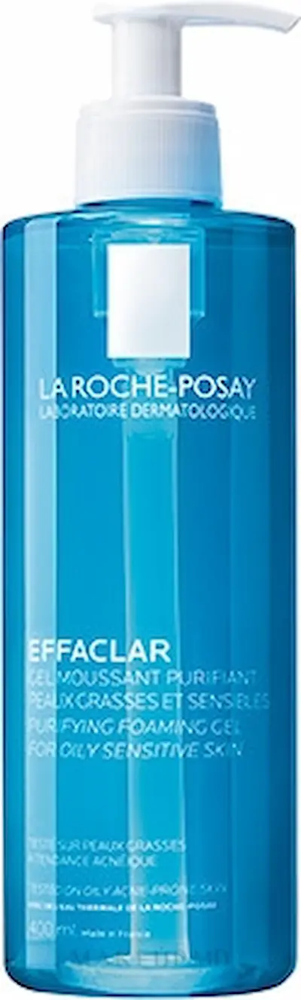
Pasul 1: Curățare
Produs: La Roche-Posay Effaclar Gel
Eficiență ridicată
Curăță în profunzime pielea și elimină excesul de sebum.
Potrivit pentru ten gras și sensibil, nu usucă pielea.

Pasul 2: Exfoliere
Produs: Paula’s Choice 2% BHA
Eficiență ridicată
Curăță porii și reduce punctele negre.
Acidul salicilic reduce inflamațiile și excesul de sebum.
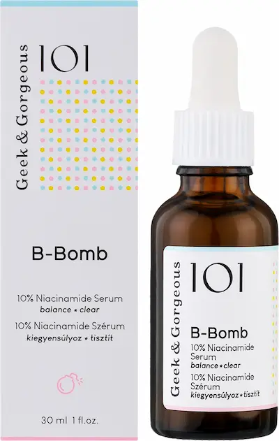
Pasul 3: Ser
Produs: Geek & Gorgeous B-Bomb
Eficiență ridicată
Controlează sebumul și reduce inflamațiile.
Niacinamidă + zinc pentru ten gras și problematic.
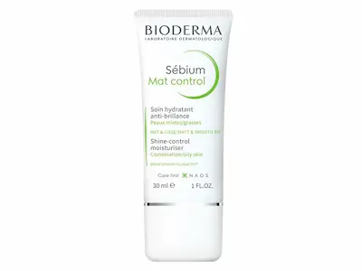
Pasul 4: Hidratare
Produs: Bioderma Sébium Mat Control
Eficiență ridicată
Matifiază și hidratează fără luciu uleios.
Bază excelentă pentru machiaj.
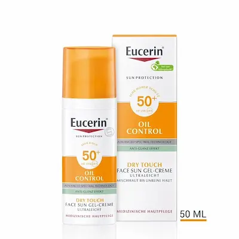
Pasul 5: SPF
Produs: Eucerin Oil Control SPF 50
Eficiență ridicată
Protejează pielea și controlează luciul.
Textură ușoară, nu încarcă porii.
Protocol de pregătire a pielii uscate: hidratare intensă și refacerea barierei cutanate
Recenzie independentă. Produsele sunt selectate pentru pielea uscată și deshidratată.
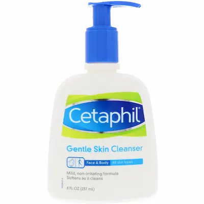
Pasul 1: Curățare delicată
Produs: Cetaphil Gentle Skin Cleanser
Eficiență ridicată
Curăță fără a afecta bariera protectoare a pielii.
Ideal pentru pielea sensibilă și uscată.
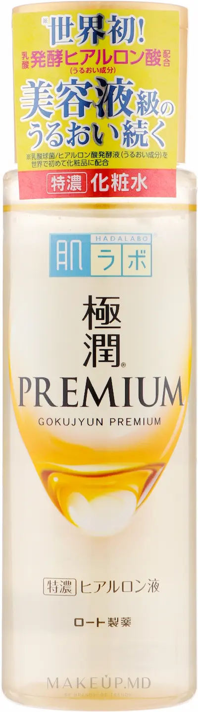
Pasul 2: Hidratare
Produs: Hada Labo Gokujyun Lotion
Eficiență ridicată
Hidratează intens și reface nivelul de apă din piele.
Acid hialuronic cu diferite greutăți moleculare.
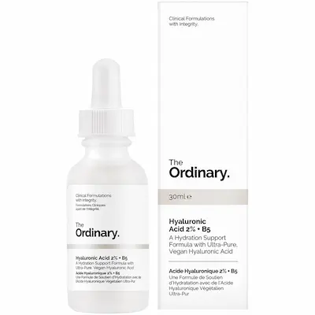
Pasul 3: Ser
Produs: The Ordinary Hyaluronic Acid + B5
Eficiență ridicată
Refacerea nivelului de hidratare al pielii.
Cu pantenol pentru efect calmant suplimentar.
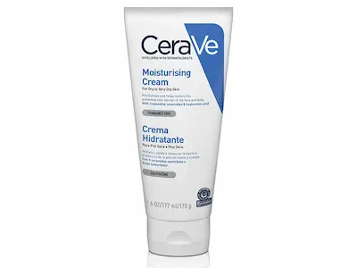
Pasul 4: Hrănire
Produs: CeraVe Moisturizing Cream
Eficiență ridicată
Refacerea barierei lipidice a pielii.
Cu ceramide și acid hialuronic.
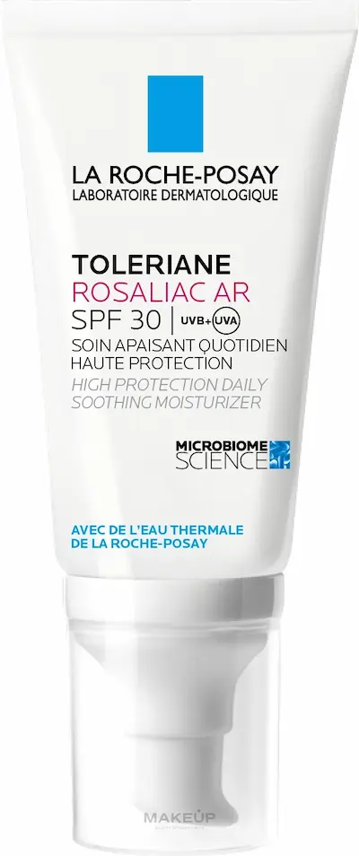
Pasul 5: SPF
Produs: La Roche-Posay Toleriane SPF
Eficiență ridicată
Protejează și hidratează în același timp.
Potrivit pentru pielea uscată și sensibilă.
Protocol de pregătire pentru tenul gras: cele mai bune produse de îngrijire
Recenzie independentă. Produsele sunt selectate pe baza eficienței pentru tenul gras.
Pasul 1: Curățare
Produs: La Roche-Posay Effaclar Gel
Eficiență ridicată
Curăță în profunzime pielea și îndepărtează excesul de sebum.
Potrivit pentru ten gras și sensibil, nu usucă pielea.
Pasul 2: Exfoliere
Produs: Paula’s Choice 2% BHA
Eficiență ridicată
Curăță porii și reduce punctele negre.
Acidul salicilic reduce inflamațiile și excesul de sebum.
Pasul 3: Ser
Produs: Geek & Gorgeous B-Bomb
Eficiență ridicată
Controlează sebumul și reduce inflamațiile.
Niacinamidă + zinc pentru ten gras și predispus la acnee.
Pasul 4: Hidratare
Produs: Bioderma Sébium Mat Control
Eficiență ridicată
Matifiază și hidratează fără efect gras.
Bază excelentă pentru machiaj.
Pasul 5: SPF
Produs: Eucerin Oil Control SPF 50
Eficiență ridicată
Protejează și controlează luciul pielii.
Textură ușoară, nu încarcă porii.
Protocol de pregătire a tenului cu semne de îmbătrânire înainte de machiaj
Recenzie independentă. Produse selectate pentru a îmbunătăți textura pielii și pentru a oferi un aspect mai uniform și proaspăt machiajului.
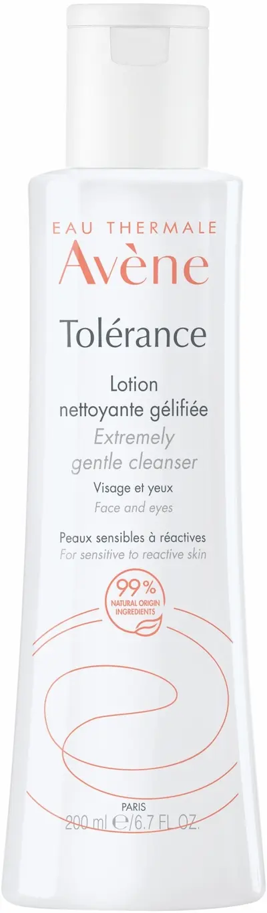
Pasul 1: Curățare
Produs: Avène Extremely Gentle Cleanser
Eficiență ridicată
Curăță delicat fără a afecta bariera protectoare a pielii.
Potrivit pentru ten sensibil și matur.
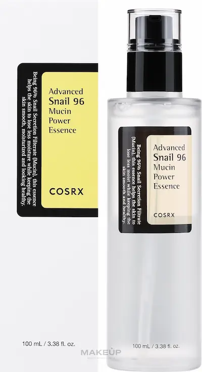
Pasul 2: Hidratare
Produs: COSRX Advanced Snail 96 Essence
Eficiență ridicată
Hidratează intens și îmbunătățește elasticitatea pielii.
Uniformizează textura pielii înainte de machiaj.
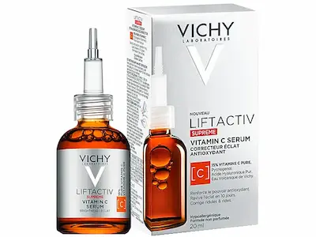
Pasul 3: Ser
Produs: Vichy Liftactiv Vitamin C Serum
Eficiență ridicată
Oferă luminozitate și uniformizează tonul pielii.
Îmbunătățește aspectul general al pielii.
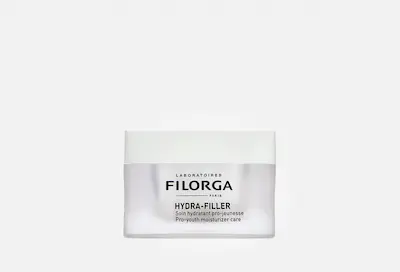
Pasul 4: Cremă
Produs: Filorga Hydra-Filler Cream
Eficiență ridicată
Hidratează intens și netezește pielea.
Creează o bază netedă pentru machiaj.
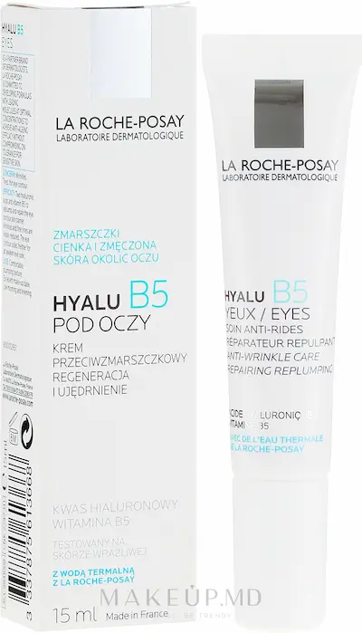
Pasul 5: Zona ochilor
Produs: La Roche-Posay Hyalu B5 Eyes
Eficiență ridicată
Hidratează și netezește liniile fine.
Previne strângerea corectorului.
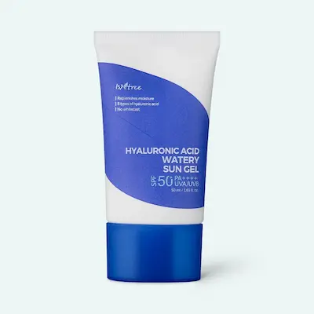
Pasul 6: SPF
Produs: Isntree Hyaluronic Acid Watery Sun Gel
Eficiență ridicată
Protejează și oferă un finisaj hidratat pielii.
Textură ușoară, fără peliculă albă.
Etapele de bază ale pregătirii pielii
Cum alegi pregătirea pielii în funcție de tipul de ten
Ten gras
Pentru tenul gras este important să controlezi producția de sebum și să folosești texturi ușoare. Sunt potrivite gelurile, serurile cu niacinamidă și cremele matifiante.
Ten uscat
Tenul uscat are nevoie de hidratare intensă și hrănire. Folosește creme cu ceramide, uleiuri și acid hialuronic.
Ten cu acnee
Este important să nu încarci pielea și să folosești produse non-comedogenice. Texturile ușoare și ingredientele calmante ajută la reducerea inflamațiilor.
Ten cu semne de îmbătrânire
Pentru tenul matur este important să restabilești nivelul de hidratare, să îmbunătățești fermitatea și să netezești vizual textura pielii. Sunt potrivite serurile cu antioxidanți, cremele cu efect de netezire și produsele care oferă un aspect natural și luminos.
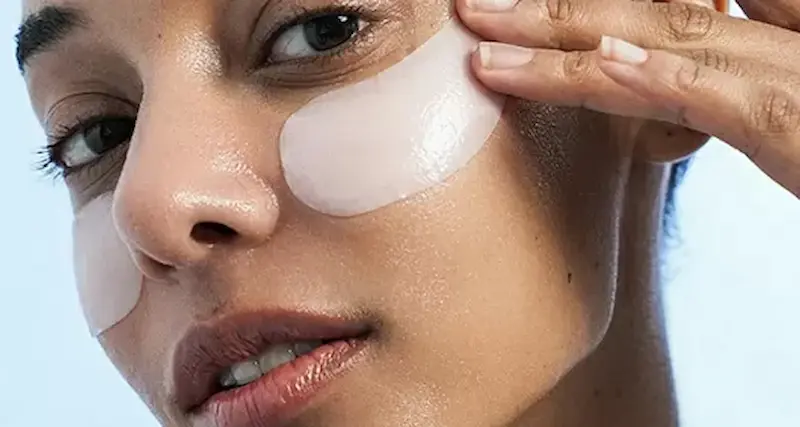
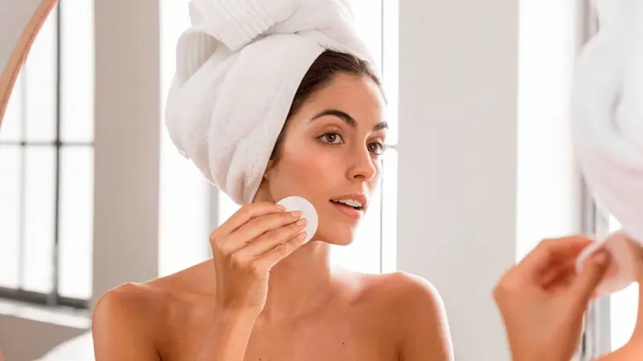
Greșeli frecvente în pregătirea pielii
Nu sunteți sigur(ă) ce vi se potrivește?
Programați un machiaj ideal cu o rutină de îngrijire corectă adaptată tipului dvs. de ten, realizat de un specialist profesionist.
Programează serviciul

Întrebări frecvente
De ce este necesară pregătirea pielii înainte de machiaj?
Pregătirea pielii ajută la uniformizarea texturii, la creșterea rezistenței machiajului și la prevenirea încărcării porilor. Fără o rutină de bază, chiar și produsele scumpe se pot aplica neuniform și pot evidenția imperfecțiunile.
Care sunt pașii obligatorii înainte de machiaj?
Setul minim include curățarea, hidratarea și protecția pielii. La nevoie se adaugă seruri și SPF. Acești pași creează o bază netedă și sănătoasă pentru machiaj.
Este diferită pregătirea pielii pentru tenul gras și cel uscat?
Da. Tenul gras are nevoie de hidratare ușoară și control al sebumului, iar tenul uscat de hrănire intensă și refacerea barierei cutanate. Nu există o rutină universală — totul se adaptează tipului de ten.
Pot să sar peste crema hidratantă dacă am tenul gras?
Nu. Lipsa hidratării poate stimula producția de sebum. Tenul gras are nevoie de creme ușoare, tip gel sau fluid.
Ce fac dacă pielea se descuamează înainte de machiaj?
Este un semn de deshidratare sau barieră cutanată afectată. Este necesară curățarea blândă, hidratarea și calmarea pielii, precum și evitarea temporară a ingredientelor agresive.
Trebuie să folosesc SPF înainte de machiaj?
Da, mai ales în timpul zilei. SPF protejează pielea de fotoîmbătrânire și pigmentare. Este recomandat să alegi texturi ușoare, care nu încarcă pielea și nu interferează cu fondul de ten.
Cât timp durează o pregătire corectă a pielii?
În medie 5–10 minute. Totuși, rutina zilnică de îngrijire este mai importantă decât pașii rapizi înainte de machiaj.